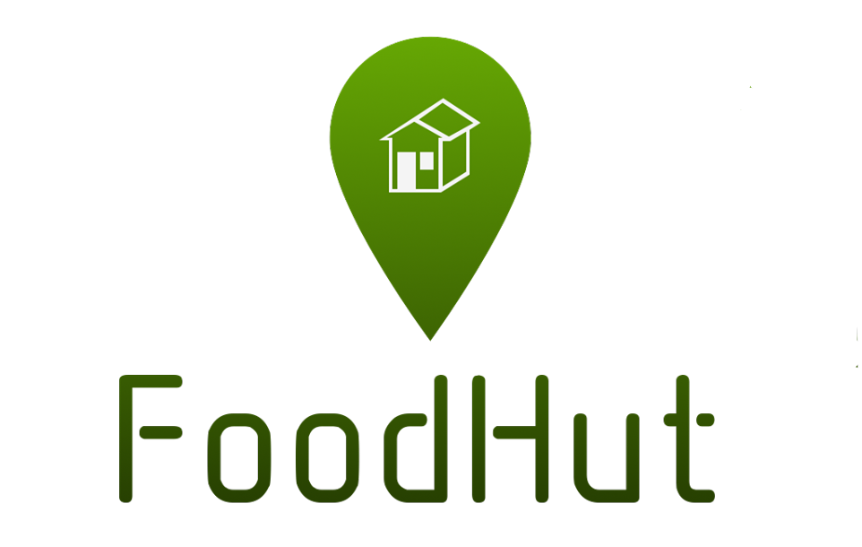

Making food waste a resource
Making food waste a resource
The vast majority of expired food in supermarkets go to waste. It does not matter if it's edible for a few more days or even weeks. The idea is to take this surplus and instead make it available to everyone, for free.
The FoodHut itself is just a small building, or “hut”, placed outside of supermarkets and grocery stores. Here, the expired food will be stored and made available to the public 24 hours a day. There will be three sections: frozen, refrigerated and dry. The food will already be registered as waste, so you can easily pick up what you want and leave.
Naturally, FoodHut will have to be based on the concept of "use at your own risk". Neither the supermarket/grocery store nor FoodHut will take responsibility for potential health-risks associated with the product. This leads to the number one "rule" for using the system: common sense. Do not eat food that has actually gone bad, and do not assume that everything inside FoodHut is safe to use. Please see our page "Useful Information" for how to identify if food is still okay to use, as well as more useful tips.
We don’t want stores to suffer from this change. The system will be cheap to implement, and not require a lot of work to keep running. We have made it easy to maintain and no one is actively working at the Food Hut. It’s simply an addition to the supermarket. It is also inexpensive when it comes to electricity. However, it does require one section for frozen groceries, and one refrigerated section.
For the workers at the supermarket, it will be quite simple. The way it works today in most supermarkets, expired food is registered continually during the day and then thrown away. With FoodHut, the only difference is that after registering the expired product, it is placed in a plastic box instead of being disposed of. There will generally be 3 different boxes in the supermarket's storage areas, for frozen, refrigerated and normal products respectively. At the end of the day, the new boxes are placed in their respective areas in the FoodHut. The "oldest" boxes are taken away and the contents disposed of. This as well as cleaning every now and then will be all the maintenance required.
Our main goal with FoodHut is to reduce food waste by giving expired food a last chance of being put to use. By doing this, we also just might help the less fortunate, whom might struggle to afford food otherwise.
On the next page you can read more about how we will try to implement this system.